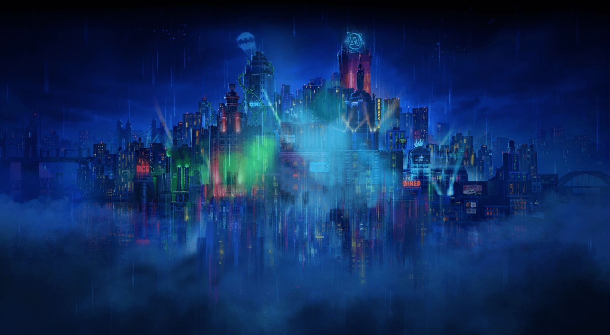
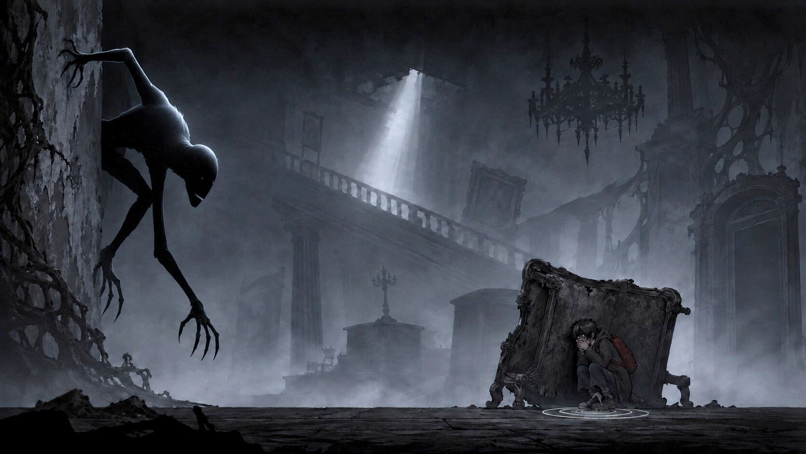

LEGO Batman
LEGO Batman: Legacy of the Dark Knight is the first LEGO Batman game in 12 years. We planned its launch to win back long-time fans and reach a new generation.
The assignment
Build the launch campaign of an upcoming game, from the studio's current voice to measurable goals.
- Our role in the exercise
- The marketing team in charge of the game's launch communication.
- Course
- Social Branding & Community Management
- When
- December 2025. Ten days, team of 4
What we had to deliver
- An analysis of the studio's current communication
- A benchmark of competitors
- Audiences and personas
- Content ideas for each network and a creator campaign
- A launch event and KPIs
The problem
Twelve years without a LEGO Batman game.
Long-time fans remember TT Games' humour. Younger players have never played a LEGO Batman game. The launch had to speak to families and to Batman fans without losing either.
Our answer
One game, two audiences, one hero moment.
Clear messages for each audience, creator partners chosen for what they do best, and a launch event that lets the brand behave like a hero: a Wayne Foundation pop-up store whose profits go to a children's charity.
How we built it
From the brief to the final pitch, in five steps.
Audit and benchmark
How TT Games talks to players today, then released and upcoming competitors.
Define two audiences
Families and casual LEGO players aged 10 to 35, and Batman fans aged 18 to 35, with two personas: Emma, 13, and Lucas, 21.
Set the positioning
Key selling points (Bruce Wayne's origin story, seven playable characters, a new combat system, the Batmobiles) and four values: heroism, adventure, nostalgia and humour.
Pick creators for two jobs
LEGO specialists for long gameplay videos that show the game, and entertainment creators for co-op streams that bring reach.
Launch it and measure it
A charity pop-up store for launch day, and KPIs for reach, engagement and creator content.
In numbers
KPIs are targets set in the exercise, not real results.
What it shows
For a product or business role.
- Audience segmentation: two targets, two messages
- Launch goals you can measure

Next project
Hunted